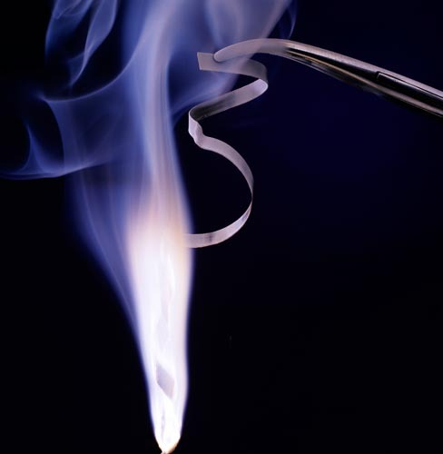
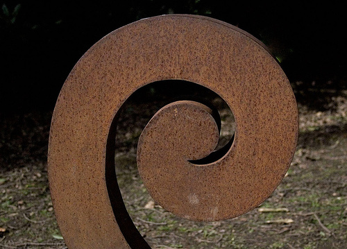
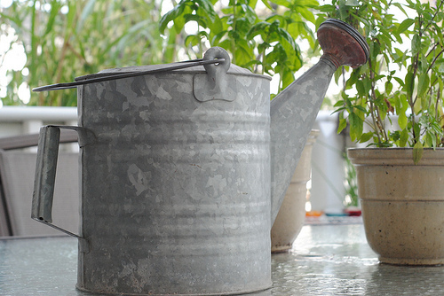

<div class="container matterandmaterials"><div id="contents" class="col-md-12 main-content"><span  class="ch-nr-3"/>
        <div  class="section"><h1 class="title" id="toc-id-0">Reactions of metals with oxygen</h1><div class="teachers-guide">
<p><strong>Chapter overview</strong></p>

<p>1.5 weeks</p>

<p>In this chapter learners will again encounter the reactions of selected metals with oxygen that were used as examples in the previous chapter. In this chapter, however, there will be a greater focus on the actual reactions - these should be demonstrated to the class - and the commonalities between them. Once again, the writing of chemical equations will be scaffolded by the process of starting with a word equation (macroscopic representation) and progressing through a picture equation (submicroscopic representation) to end at the chemical equation (symbolic representation).</p>

<p/>

<p>The content has also been presented in a slightly different order to CAPS in that the example reactions are first explored, and then the general reaction of metals with oxygen is explained, once learners have already seen example chemical equations.</p>

<p/>

<p>3.1 The reaction of iron with oxygen (1 hour)</p>

<p/>
<table><tr><td><p><strong>Tasks</strong></p></td><td><p><strong>Skills</strong></p></td><td><p><strong>Recommendation</strong></p></td></tr><tr><td><p>Activity: Three different levels of interpretation in science</p></td><td><p>Sorting and classifying, interpreting, identifying</p></td><td><p>Optional (Revision)</p></td></tr><tr><td><p>Activity: The reaction of iron with oxygen</p></td><td><p>Demonstration of steel wool burning, observing, recording, communicating, describing</p></td><td><p>CAPS suggested</p></td></tr></table><p/>

<p>3.2 The reaction with magnesium and oxygen (1 hour)</p>

<p/>
<table><tr><td><p><strong>Tasks</strong></p></td><td><p><strong>Skills</strong></p></td><td><p><strong>Recommendation</strong></p></td></tr><tr><td><p>Activity: The reaction of magnesium with oxygen</p></td><td><p>Demonstration of magnesium burning, observing, recording, communicating, describing</p></td><td><p>CAPS suggested</p></td></tr></table><p/>

<p>3.3 The general reaction of metals with oxygen (0.5 hours)</p>

<p/>

<p>(Questions within the text)</p>

<p/>

<p>3.4 The formation of rust (1.5 hour)</p>

<p/>
<table><tr><td><p><strong>Tasks</strong></p></td><td><p><strong>Skills</strong></p></td><td><p><strong>Recommendation</strong></p></td></tr><tr><td><p>Activity: The reaction between iron and oxygen in air</p></td><td><p>Demonstrating, observing, recording, describing,</p></td><td><p>Optional (Suggested)</p></td></tr><tr><td><p>Activity: Why is rust a problem?</p></td><td><p>Identifying problems and issues</p></td><td><p>Optional (Suggested)</p></td></tr></table><p/>

<p>3.5 Ways to prevent rust (0.5 hours)</p>

<p/>

<p>(Questions within the text)</p>

<p/>
</div>
<p/>
<div class="note col-md-10" data-type="keyquestions"><ul data-class="ListBulleted"><li>What happens when a metal reacts with oxygen?</li>
<li>What is the product called?</li>
<li>How can we represent the general reaction between a metal and oxygen?</li>
<li>What is a combustion reaction?</li>
<li>What is rust and how does it form?</li>
<li>How can iron be made more rust-resistant?</li>
</ul></div>
<p/>

<p>In the previous chapter, we learnt how to write and balance equations. The three examples we learnt about were:</p>
<ul data-class="ListBulleted"><li>
<p>magnesium + oxygen &#8594; magnesium oxide</p>
</li>
<li>
<p>iron + oxygen &#8594; iron oxide</p>
</li>
<li>
<p>copper + oxygen &#8594; copper oxide</p>
</li>
</ul><p/>

<p>Which groups do magnesium, iron and copper come from? </p><hr/><hr/><div class="teachers-guide">
<p>Magnesium is group 2, iron is group 8 and copper is group 11. This is important as elements in the same group will react similarly.</p>
</div>
<p/>

<p>In these reactions, the elements that react with oxygen are all <strong>metals</strong>. If you are not convinced of this, find them on the Periodic Table below in the front of your book. Can you see that they are all found in the region occupied by the metals? Where are metals located on the Periodic Table? </p><hr/><div class="teachers-guide">
<p>On the left.</p>
</div>
<p/>

<p>The names of the products of the three reactions above have something in common. Write down the names. Can you see what they have in common? </p><hr/><hr/><div class="teachers-guide">
<p>The products are: magnesium oxide, iron oxide, copper oxide. They all have 'oxide' in their name.</p>
</div>
<p/>

<p>The products are all <strong>metal oxides</strong>. What exactly are metal oxides? As we will see later when we draw diagrams and write formulae to represent these reactions, they are compounds in which a metal is combined with oxygen, in some fixed ratio.</p>

<p/>
<div class="note col-md-6" data-type="takenote">
<p>The metals will react similarly with the other elements in the same group as oxygen (group 16).</p>
</div>
<p/>

<p>We are going to look at two of the reactions shown previously in greater detail in this chapter. Remember that they are not the only reactions of metals with oxygen; they are just the ones that have been chosen as examples.</p>

<p/>

<p>First, we will observe the actual reactions. Your teacher will demonstrate, while you make observations. Afterwards we will write about these reactions using 'scientific language' as we write reaction equations for each one. Before we start, here is a reminder of something we discussed in Chapter 1.</p>

<p/>
<div class="activity" data-type="Activity"><h1 class="title">Three different levels of interpretation in science</h1>
<p/>

<p>In the first chapter of Gr. 9 Matter and Materials, we learnt that scientists interpret chemical reactions on three different levels. Those three levels are:</p>

<p/>
<ul data-class="ListBulleted"><li>the macroscopic level;</li>
<li>the submicroscopic level; and</li>
<li>the symbolic level.</li>
</ul><div class="exercises"><div class="problemset"><div class="entry"><div class="problem">
<p/>

<p>Check whether you still remember what each level refers to, by completing the following table.</p>

     
      <table class="too-large"><tr><td><p><strong>When we do the following:</strong></p></td><td><p><strong>We are operating on this level: (Macroscopic/ submicroscopic/ symbolic)</strong></p></td></tr><tr><td><p>Observe actual reactions (see, hear, smell, touch, taste).</p>

                
<p>Describe what we see in words.</p></td><td><p/></td></tr><tr><td><p>Imagine the behaviour of particles during reactions.</p>

                
<p>Draw pictures of particles in substances.</p></td><td><p/></td></tr><tr><td><p>Write chemical formulae.</p>

                
<p>Write reaction equations.</p></td><td><p/></td></tr></table></div><div class="solution">
<p/><p/>

      <table><tr><td><p><strong>When we do the following:</strong></p></td><td><p><strong>We are operating on this level: (Macroscopic/submicroscopic/symbolic)</strong></p></td></tr><tr><td><p>Observe actual reactions (see, hear, smell, touch, taste).</p>

                
<p>Describe what we see in words.</p></td><td><p>Macroscopic</p></td></tr><tr><td><p>Imagine the behaviour of particles during reactions.</p>

                
<p>Draw pictures of particles in substances.</p></td><td><p>Submicroscopic</p></td></tr><tr><td><p>Write chemical formulae.</p>

                
<p>Write reaction equations.</p></td><td><p>Symbolic</p></td></tr></table><p/>
</div></div></div></div>

<p>Soon your teacher will demonstrate two reactions, while you will be making observations. Which of the three levels will you be operating at? </p><hr/><div class="teachers-guide">
<p>The macroscopic level.</p>
</div>
<p/>
</div>

<p>The purpose of these demonstrations is to give you a chance to make macroscopic observations of the chemical changes that take place during the reactions. This chapter will also help you to link those macroscopic observations with pictures and equations that you learnt to write in the previous chapter.</p>
<div class="section"><h2 class="title" id="toc-id-1">The reaction of iron with oxygen</h2>
<p/>
<div class="note col-md-6" data-type="newwords"><ul data-class="ListBulleted"><li>combustion</li>
</ul></div>
<p/>

<p>We will be looking at how iron reacts with oxygen. In some cases, you might use steel wool for these experiments. Do you know what steel wool is? It is wire wool made of very fine steel threads. Steel is an alloy made mostly of iron. So, when we look at how steel wool burns in oxygen, we are actually looking at how iron reacts with oxygen.</p>
<div class="note col-md-6" data-type="takenote">
<p>A metal alloy is a solid mixture of two or more different metal elements. Examples are steel and brass.</p>
</div><figure><figcaption class="caption">Steel wool spinning creates interesting photos as the iron burns in oxygen and creates orange sparks. <a href="http://www.flickr.com/photos/rockandrollfreak/7697586652/"> http://www.flickr.com/photos/rockandrollfreak/7697586652/ </a></figcaption></figure><figure><figcaption class="caption">Iron shavings look like sparks when they burn in the blue flame of a Bunsen burner.</figcaption></figure><p/>
<div class="note col-md-6" data-type="visit">
<p>You can see a video of steel wool burning here:<a data-class="ExternalLink" href="http://bit.ly/1cYPyz7">bit.ly/1cYPyz7</a></p>
</div>
<p/>

<p>Your teacher will perform a demonstration in which iron is burned in air. When a substance burns in air, the reaction is called a <strong>combustion reaction</strong>. When a substance combusts in air, it is really reacting with oxygen.</p>

<p/>
<div class="activity" data-type="Activity"><h1 class="title">The reaction of iron with oxygen</h1>
<p/>
<div class="teachers-guide">
<p>It is recommended that you demonstrate this reaction to the learners, because of the hazards involved when burning metals.</p>

<p>Safety precautions to observe during the demonstrations:</p>
<ol data-class="ListEnumerated"><li>Wear safety goggles and a protective coat.</li>
<li>Exercise caution when burning the steel wool, as sparks may be produced. Learners should be cautioned against standing too close during the demonstration.</li>
<li>Place a clean beaker or watch glass underneath to catch any metal oxide that forms during the reaction. Students can examine the reaction product afterwards to formulate their observations.</li>
</ol></div>
<p><strong>MATERIALS:</strong></p>
<ul data-class="ListBulleted"><li>Bunsen burner or spirit burner</li>
<li>matches</li>
<li>safety goggles</li>
<li>steel wool</li>
<li>tongs</li>
</ul><p><strong>INSTRUCTIONS:</strong></p>
<ol data-class="ListEnumerated"><li>Your teacher will demonstrate the combustion of iron in oxygen (which is present in air).</li>
<li>You should make careful observations during the demonstration and write these down in the spaces provided below. To guide you, some questions have been provided.</li>
</ol><p><strong>QUESTIONS:</strong></p>
<div class="exercises"><div class="problemset"><div class="entry"><div class="problem">We used steel wool in this demonstration, but what is steel wool mostly made of? 
<p/>

<p/><hr/></div><div class="solution">
<p/><p>Steel wool is an alloy made mostly of iron. <strong>NOTE:</strong> The other elements in steel include carbon, manganese, phosphorus, sulfur, silicon, and traces of oxygen, nitrogen and aluminum. Learners do not need to know the names of the other elements in steel wool.</p>
</div></div><div class="entry"><div class="problem">Look at the metal before it is burned. Describe what it looks like. 
<p/>

<p/><hr/><hr/></div><div class="solution">
<p/><p>Learners' observations may include any of the following: The steel wool consists of thin threads of iron. It looks like hair made of metal. Depending on the state of the steel wool, learners may describe it as shiny, or dull grey, metallic, or even rusty. Encourage creative descriptions.</p>
</div></div><div class="entry"><div class="problem">Can you see the oxygen that the metal will react with? Can you describe it?
<p/>

<p/><hr/><hr/></div><div class="solution">
<p/><p>Oxygen gas can not be seen or directly observed and so it cannot be described.</p>
</div></div><div class="entry"><div class="problem">What do you observe during the reaction? Describe anything you see, hear, or smell. 
<p/>

<p/><hr/><hr/><hr/></div><div class="solution">
<p/><p/>

        <ul data-class="ListBulleted"><li>Learners may see the steel wool burning and bright orange sparks falling. They may even notice some smoke.</li>
<li>Learners may hear the crackling sound of the steel wool burning.</li>
<li>Learners may notice a metallic smell in the air.</li>
<li>Learners may experience the heat from the combustion reaction.</li>
</ul><p/>
</div></div><div class="entry"><div class="problem">What does the product of the reaction look like? Describe it in as much detail as possible. 
<p/>

<p/><hr/></div><div class="solution">
<p/><p>The product is a reddish-brown, crumbly solid.</p>
</div></div></div></div>

<p/>
</div>
<div class="note col-md-6" data-type="didyouknow">
<p>Iron oxide is used as a pigment in paints as it comes in a range of browns and reds.</p>
</div>
<p>If you think the reaction when iron burns in oxygen is spectacular, the next demonstration will amaze you!</p></div><div class="section"><h2 class="title" id="toc-id-2">The reaction of magnesium with oxygen</h2>
<p/>
<div class="note col-md-6" data-type="newwords"><ul data-class="ListBulleted"><li>camera flash</li>
<li>ignite</li>
</ul></div>
<p>Your teacher will perform a demonstration in which magnesium is burned in air.</p>
<figure><figcaption class="caption">Magnesium burns with a bright white flame.</figcaption></figure><div class="note col-md-6" data-type="visit">
<p>A video showing magnesium burning in oxygen<a data-class="ExternalLink" href="http://bit.ly/14nA93I">bit.ly/14nA93I</a></p>
</div><div class="activity" data-type="Activity"><h1 class="title">The reaction of magnesium with oxygen</h1><div class="teachers-guide">
<p>It is recommended that you demonstrate the reaction to the learners, because of the hazards involved with burning metals.</p>

<p/>

<p><u>Instructions</u>:</p>
<ol data-class="ListEnumerated"><li>Wear safety goggles and a protective coat.</li>
<li>Caution learners not to look directly at the intense white flame produced by the burning magnesium.</li>
<li>Place a clean beaker or watch glass underneath to catch any metal oxide that forms during each reaction. Students can examine the reaction product afterwards to formulate their observations.</li>
<li>
<p>You may want to retain the product of the magnesium combustion reaction for a follow-up experiment in the chapter <em>Reactions of acids with metal oxides.</em></p>
</li>
<li>You can also mix the product in water at this stage and test if it is an acid or base.</li>
</ol><p/>
</div>
<p><strong>MATERIALS:</strong></p>
<ul data-class="ListBulleted"><li>Bunsen burner or spirit burner</li>
<li>matches</li>
<li>safety goggles</li>
<li>magnesium ribbon</li>
<li>tongs</li>
<li>watch glass or beaker</li>
</ul><p/>

<p><strong>INSTRUCTIONS:</strong></p>
<ol data-class="ListEnumerated"><li>Your teacher will demonstrate the combustion of magnesium in oxygen.</li>
<li>You should make careful observations during the demonstration and write these down in the spaces provided below.</li>
</ol><p/>

<p><strong>QUESTIONS:</strong></p>
<div class="exercises"><div class="problemset"><div class="entry"><div class="problem">Describe the physical form (shape) of the metal in this experiment. 
<p/>

<p/><hr/></div><div class="solution">
<p/><p>The magnesium is in the form of magnesium 'ribbon'.</p>
</div></div><div class="entry"><div class="problem">What do we call reactions where a substance burns in air? 
<p/>

<p/><hr/></div><div class="solution">
<p/><p>Combustion reactions.</p>
</div></div><div class="entry"><div class="problem">How would you describe the physical appearance or colour of the metal before it is burned? 
<p/>

<p/><hr/><hr/></div><div class="solution">
<p/><p>Learners' observations may include any of the following: The magnesium ribbon looks like a thin strip of metal. It looks like metal tape. Depending on the state of the ribbon, learners may describe it as shiny, or dark grey, black, metallic, or even tarnished. Encourage creative descriptions.</p>
</div></div><div class="entry"><div class="problem">Can you see the oxygen that the metal will react with? Can you describe it? 
<p/>

<p/><hr/></div><div class="solution">
<p/><p>Oxygen gas can not be seen or directly observed and so it cannot be described.</p>
</div></div><div class="entry"><div class="problem">What do you observe during the reaction? Describe anything you see, hear, or smell. 
<p/>

<p/><hr/><hr/><hr/></div><div class="solution">
<p/><p/>

        <ul data-class="ListBulleted"><li>Learners may see the magnesium burning with a blinding white light. They may notice some smoke.</li>
<li>Learners may hear crackling or hissing as the magnesium burns.</li>
<li>Learners may notice a hot, metallic smell in the air.</li>
<li>Learners may experience the heat from the combustion reaction.</li>
</ul><p/>
</div></div><div class="entry"><div class="problem">What does the product of the reaction look like? Describe it in as much detail as possible. 
<p/>

<p/><hr/></div><div class="solution">
<p/><p>The product is a soft, white, powdery solid.</p>
</div></div></div></div>

<p/>

<p>Magnesium is in group 2 in the Periodic Table. Do you remember that we said that elements in the same group will behave similarly. This means that they will react in a similar way. We have studied how magnesium reacts with oxygen, but calcium, for example, will behave in a similar way. You can watch the video in the visit link to confirm this.</p>

<p/>
<div class="note col-md-6" data-type="visit">
<p>Video showing calcium reacting with oxygen<a data-class="ExternalLink" href="http://bit.ly/19n3u7c">bit.ly/19n3u7c</a></p>
</div>
<p/>
</div>

<p/>

<p>The following diagram combines the macroscopic, submicroscopic and symbolic representations of the reaction that you have just observed.</p>

<p/>
<figure id="gd-idm9095984"></figure><p/>
<div class="note col-md-6" data-type="didyouknow">
<p>To take a photo in the dark, we need a camera flash. Most cameras have built in flashes these days. But, the earliest flashes worked with flash powder that contained magnesium grains. They had to be lit by hand and burned very brightly, for a very short period.</p>
</div>
<p/>
<figure><figcaption class="caption">A photographer using an antique camera and flash that works with magnesium powder. <a href="http://en.wikipedia.org/wiki/File:1909_Victor_Flash_Lamp.jpg"> http://en.wikipedia.org/wiki/File:1909_Victor_Flash_Lamp.jpg </a></figcaption></figure><p/>

<p>Now that we have made our macroscopic observations of the two reactions, we are ready to write about these reactions in scientific language.</p></div><div class="section"><h2 class="title" id="toc-id-3">The general reaction of metals with oxygen</h2>
<p/>
<div class="note col-md-6" data-type="newwords"><ul data-class="ListBulleted"><li>word equation</li>
<li>picture equation</li>
<li>chemical equation</li>
<li>reactants</li>
<li>product</li>
<li>metal oxide</li>
</ul></div>
<p/>

<p>Let us start by writing word equations for the two reactions that we have just performed. Word equations are often easier to write than picture equations or chemical equations and so they are a good starting point when we want to write reactions.</p>

<p/>

<p>Write the word equation for the reaction between iron and oxygen and for the reaction between magnesium and oxygen. </p><hr/><hr/><div class="teachers-guide">
<p>The word equations are:</p>
<ul data-class="ListBulleted"><li>
<p>iron + oxygen &#8594; iron oxide</p>
</li>
<li>
<p>magnesium + oxygen &#8594; magnesium oxide</p>
</li>
</ul><p>You can write these on the board.</p>
</div><div class="section"><h3 class="title" id="toc-id-4">The word equation</h3>
<p/>

<p>We can write a general word equation for reactions in which a metal reacts with oxygen:</p>

<p/>

<p><strong>metal + oxygen &#8594; metal oxide</strong></p>

<p/>

<p>When we use words to describe a reaction, we are still operating on the macroscopic level. Next, we are going to translate our word equation to a picture equation.</p>

<p/></div><div class="section"><h3 class="title" id="toc-id-5">The picture equation</h3>
<p/>

<p>When we represent a chemical reaction as a particle diagram, such as in the picture equation below, we are operating on the submicroscopic level.</p>

<p/>
<figure id="gd-idm14226304"></figure><p/>

<p>Can you identify the reactants in the above equation? The purple atoms are magnesium and the oxygen atoms are red. Write down the name and chemical formula of the product of the reaction.</p>
<div class="teachers-guide">
<p>The product is magnesium oxide (MgO)</p>
</div>
<p/>

<p>The picture is not the same for all reactions of metals with oxygen.</p></div><div class="section"><h3 class="title" id="toc-id-6">The chemical equation</h3>
<p/>

<p>We can go further and translate the picture equation for the reaction between magnesium and oxygen to a chemical equation:</p>

<p/>

<p><strong>2 Mg + O<sub>2</sub>&#8594; 2 MgO</strong></p>

<p/>

<p>Since the chemical equation consists of symbols, we can think of this as a symbolic representation.</p>

<p>Can you remember what the numbers in front of the formulae in the chemical equation are called? Can you remember what the numbers inside a chemical formula are called? </p><hr/><div class="teachers-guide">
<p>Coefficients and subscripts, respectively.</p>
</div>
<p/>

<p>As we have said, the metals in the same group will react in the same way as each other with oxygen. So, calcium reacts with oxygen in the same way as magnesium reacts with oxygen. The chemical equations also show similarities. The chemical equation for the reaction between calcium and oxygen is:</p>

<p/>

<p><strong>2Ca + O<sub>2</sub>&#8594;2CaO</strong></p>

<p>What is the product called in this reaction? </p><hr/><div class="teachers-guide">
<p>Calcium oxide.</p>
</div>
<p>What group are calcium and magnesium from? </p><hr/><div class="teachers-guide">
<p>Group 2.</p>
</div>
<p>A metal oxide has the the general formula MO or M<sub>2</sub>O. In the formula, M represents a metal atom and O represents oxygen. We can therefore say that metals from Group 2 will react with oxygen and have the following general equation, where <strong>M</strong> represent a Group 2 metal:</p>

<p/>

<p><strong>2M + O<sub>2</sub>&#8594;2MO</strong></p>
<div class="note col-md-6" data-type="takenote">
<p>Metal oxides of the types M<sub>2</sub>O<sub>3</sub> and MO<sub>2</sub> also occur, but we will limit our discussion to the first two types.</p>
</div>
<p>To know whether MO or M<sub>2</sub>O will be the correct formula, here are two simple rules for you to remember:</p>
<div class="teachers-guide">
<p>This is a suggested way to assist learners to write the formulas. Once learners have learnt about valencies in Gr. 10-12, they will be able to use this information to write the formulas of compounds. for now though, this is sufficient.</p>
</div><ol data-class="ListEnumerated"><li>
              
<p/>

<p><strong>Metal oxides from group 1 on the Periodic Table will have the formula M<sub>2</sub>O.</strong></p>

            </li>
</ol><p>Can you write two examples? Look at the Periodic Table at the front of the book, pick any two metals from group 1 and write their formulae using this rule. </p><hr/><hr/><div class="teachers-guide">
<p>Any two of the following: Li<sub>2</sub>O, Na<sub>2</sub>O, K<sub>2</sub>O, Rb<sub>2</sub>O, Cs<sub>2</sub>O</p>
</div><ol data-class="ListEnumerated"><li>
<p><strong>Metal oxides from group 2 will have the formula MO.</strong></p>
</li>
</ol><p>Can you write 2 examples? </p><hr/><hr/><div class="teachers-guide">
<p>Any two of the following: BeO, MgO, CaO, SeO, BaO</p>
</div><div class="note col-md-6" data-type="didyouknow">
<p>Group 1 metals are referred to as the <strong>Alkali Metals</strong> and Group 2 metals are referred to as the <strong>Alkaline Earth Metals</strong>.</p>
</div>
<p>Iron is from Group 8. Here is the picture equation of the reaction between iron and oxygen (iron is green and oxygen is red).</p>
<figure id="gd-idm16925216"></figure><p>Write the chemical equation and word equation for this reaction underneath the picture equation.</p>
<div class="teachers-guide">
<p>Learners should write the following in line with the respective pictures in the above diagram:</p>
<ul data-class="ListBulleted"><li>
<p>iron + oxygen &#8594; iron oxide</p>
</li>
<li>
<p/>

<p>4 Fe + 3 O<sub>2</sub> &#8594; 2 Fe<sub>2</sub>O<sub>3</sub></p>
</li>
</ul><p/>
</div>
<p>In the next section, we are going to return to the macroscopic world to see another example of the reaction between iron and oxygen that you should be very familiar with - the formation of rust.</p></div></div><div class="section"><h2 class="title" id="toc-id-7">The formation of rust</h2>
<p/>
<div class="note col-md-6" data-type="newwords"><ul data-class="ListBulleted"><li>rust</li>
<li>corrosion</li>
<li>corrosive</li>
<li>rust-resistant</li>
<li>steel</li>
</ul></div>
<p/>

<p>Do you know what rust is? The pictures below will provide some clues.</p>
<figure><figcaption class="caption">Different objects which rust. <a href="http://www.flickr.com/photos/flattop341/347445202/"> http://www.flickr.com/photos/flattop341/347445202/ </a></figcaption></figure><p/>
<div class="activity" data-type="Activity"><h1 class="title">The reaction between iron and oxygen in air</h1>
<p/>
<div class="teachers-guide">
<p>Here is a suggested activity for you to show how rust forms. This is not required by CAPS. It can be set up as a demonstration. You can then compare this reaction with the one that you did previously where iron was burned in oxygen in a combustion reaction.</p>

<p/>

<p>This experiment will require a place where it can remain undisturbed for two or three days. It may be worth setting up this experiment at the start of this section. Take note: The test tube may be difficult to clean at the end of this experiment.</p>
</div>
<p/>

<p><strong>MATERIALS:</strong></p>
<ul data-class="ListBulleted"><li>test tube</li>
<li>clamp</li>
<li>retort stand</li>
<li>dish</li>
<li>iron filings</li>
<li>water</li>
</ul><p><strong>INSTRUCTIONS:</strong></p>
<ol data-class="ListEnumerated"><li>Rinse a test tube with water to wet the inside.</li>
<li>Carefully sprinkle a spatula of iron filings around the sides of the test tube.</li>
<li>Invert the test tube in a dish of water. Use a clamp attached to a retort stand to hold the test tube in place.</li>
<li>Over the three days the water must remain above the lip of the test tube.</li>
</ol><p>Here is a simple diagram showing the experimental setup with the clamp holding the test tube upright.</p>
<figure id="gd-idm5928256"></figure><p><strong>QUESTIONS:</strong></p>
<div class="exercises"><div class="problemset"><div class="entry"><div class="problem">What do the iron filings look like at the start of the experiment? 
<p/>

<p/><hr/></div><div class="solution">
<p/><p>They are a silvery colour.</p>
</div></div><div class="entry"><div class="problem">What are the reactants in this experiment? 
<p/>

<p/><hr/></div><div class="solution">
<p/><p>Iron and oxygen (and water).</p>
</div></div><div class="entry"><div class="problem">Is there something present that is aiding or speeding up the reaction? 
<p/>

<p/><hr/></div><div class="solution">
<p/><p>The water.</p>
</div></div><div class="entry"><div class="problem">What does the product look like at the end of the reaction? 
<p/>

<p/><hr/></div><div class="solution">
<p/><p>It is a browny, red colour.</p>
</div></div></div></div>

<p/>
</div>

<p>Rust is a word to describe the flaky, crusty, reddish-brown product that forms on iron when it reacts with oxygen in the air.</p>

<p>When your teacher burned the iron earlier, it reacted quickly with oxygen to form iron oxide. Here is a picture of iron oxide to remind you what it looked like.</p>
<figure><figcaption class="caption">A sample of iron oxide.</figcaption></figure><div class="section"><h3 class="title" id="toc-id-8">Rust is a form of iron oxide</h3>
<p/>

<p>When iron is exposed to oxygen in the air, a similar reaction occurs, but much more slowly. The iron is gradually 'eaten away' as it reacts slowly with the oxygen. Under wet conditions iron will rust more quickly.</p>

<p/>

<p>Rust is actually a mixture of different oxides of iron, but the Fe<sub>2</sub>O<sub>3</sub> of our earlier example is an important part of that. The rusting of iron is actually a good example of the process of corrosion.</p>

<p/>
<div class="teachers-guide">
<p>Remind learners of where else they have heard the term 'corrosive' used before in Matter and Materials. It is used to describe strong acids and bases which learners were first introduced to in Gr. 7 Matter and Materials and will look at again later in this term.</p>
</div>
<p/>

<p>Rusting tends to happen much faster near the ocean. Not only are there water droplets, but these droplets have salt in them and this makes them even more corrosive. Rusting also happens more quickly in the presence of acids. Inside laboratories, or factories where acids are used or stored, the air is also very corrosive. When the air in a specific area contains moisture mixed with acid or salt, we refer to the area as having a <strong>corrosive climate.</strong></p>

<p/>
<figure><figcaption class="caption">An abandoned car quickly rusts and corrodes near the sea. <a href="http://www.flickr.com/photos/mikebaird/4585328947/"> http://www.flickr.com/photos/mikebaird/4585328947/ </a></figcaption></figure><p/>

<p>If you live in a corrosive climate, for example near the ocean, it is often better to make the window frames and doors of your house from wood instead of iron and steel, because wood does not rust. Many people also use aluminium as this metal does not rust.</p>

<p/></div><div class="section"><h3 class="title" id="toc-id-9">The problem with rust</h3>
<p/>

<p>Rust is a natural process and its effects can be quite beautiful.</p>
<figure><figcaption class="caption">A garden sculpture that was intended to rust to give it more texture. <a href="http://www.flickr.com/photos/lizjones/449708229/"> http://www.flickr.com/photos/lizjones/449708229/ </a></figcaption></figure><p/>

<p>However, iron and rust (iron oxide) are completely different materials and therefore have different properties.</p>

<p/>
<div class="activity" data-type="Activity"><h1 class="title">Why is rust a problem?</h1><div class="teachers-guide">
<p>This links to what learners have done in previous grades about the properties of materials.</p>
</div><div class="exercises"><div class="problemset"><div class="entry"><div class="problem">Let's imagine we have manufactured something out of iron. What properties of iron do we want to take advantage of? 
<p/>

<p/><hr/><hr/></div><div class="solution">
<p/><p>Iron is a metal, so it is hard, strong and flexible.</p>
</div></div><div class="entry"><div class="problem">What objects do you think we make out of iron where these properties are desirable? 
<p/>

<p/><hr/><hr/></div><div class="solution">
<p/><p>Tools, locks, hinges, screws and nails, garage doors... the list of items is almost endless!</p>
</div></div></div></div>

<p>When an item is made of iron, we might want to protect it from rust, to prevent it from losing those desired properties. Do you think the rusty chain and door handle in the following photos will be as strong and flexible as when they were new? Why not?</p>
<figure><figcaption class="caption">A rusted chain. <a href="http://www.flickr.com/photos/a2gemma/2373078360/"> http://www.flickr.com/photos/a2gemma/2373078360/ </a></figcaption></figure><figure><figcaption class="caption">A rusted door hinge. <a href="http://www.flickr.com/photos/49889874@N05/4883527730/"> http://www.flickr.com/photos/49889874@N05/4883527730/ </a></figcaption></figure><div class="exercises"><div class="problemset"><div class="entry"><div class="problem">
<p/>

<p/><hr/><hr/></div><div class="solution">
<p/><p>No, they will not be as strong. Rust is a different compound to the element iron and so it has different properties. It starts to weaken the objects.</p>
</div></div></div></div>

<p/>
</div>

<p>You might have learnt in previous grades that iron can be strengthened, and made more resistant to rust, by mixing it with other elements to turn it into <strong>steel</strong>.</p>

<p>Steel is used in the construction of buildings, because it is very strong. Steel is not completely rust-resistant, however, and needs to be protected against rust, especially in moist and corrosive climates.</p>
<figure><figcaption class="caption">A building under construction. You can see the framework made of steel. <a href="http://www.flickr.com/photos/ell-r-brown/5375682861/"> http://www.flickr.com/photos/ell-r-brown/5375682861/ </a></figcaption></figure><figure><figcaption class="caption">Steel reinforcement to support a building. As you can see, steel can also rust. <a href="http://www.flickr.com/photos/sbeebe/5225048839/"> http://www.flickr.com/photos/sbeebe/5225048839/ </a></figcaption></figure><p/>

<p>In the next section, we will learn about the different ways in which iron and steel can be protected against rust.</p>

<p/></div></div><div class="section"><h2 class="title" id="toc-id-10">Ways to prevent rust</h2>
<p/>
<div class="note col-md-6" data-type="newwords"><ul data-class="ListBulleted"><li>collide</li>
<li>barrier</li>
<li>exposed</li>
<li>porous</li>
<li>penetrate</li>
<li>chromed metal</li>
<li>galvanised metal</li>
<li>galvanise</li>
<li>oxidise</li>
</ul></div>
<p>Rust forms on the surface of an iron or steel object, when that surface comes into contact with oxygen. The oxygen molecules collide with the iron atoms on the surface of the object, and they react to form iron oxide. If we wanted to prevent that from happening, what would we have to do? </p><hr/><div class="teachers-guide">
<p>We would need to put something between the oxygen and iron so they cannot make contact.</p>
</div><figure id="gd-idm6769680"></figure><div class="section"><h3 class="title" id="toc-id-11">Paint provides a barrier to rust</h3>
<p/>

<p>If we wanted to prevent the iron atoms and oxygen molecules from making contact, we would need to place a barrier between them. That is what we are doing when we paint an iron surface to protect it from rust.</p>

<p/>
<figure id="gd-idm12693072"></figure><p/>

<p>Paint is not the ultimate barrier, though. If the paint surface is scratched, or it starts to peel off, the metal will be exposed and rust can still form.</p>

<p/></div><div class="section"><h3 class="title" id="toc-id-12">Other metals as barriers to rust</h3>
<p/>

<p>Rust is a porous material. This means that air and water can penetrate through the rust on the surface of the object to reach the iron underneath. The iron will continue to corrode even if it has a thick layer of rust covering it. So even though the iron surface is covered, it is not protected, because the oxygen molecules can still reach the iron to react with it.</p>

<p/>

<p>There are a number of other ways to stop or slow down rust. One way to protect the iron surface is to cover it with a metal that does not corrode, like chromium, for instance. Taps and bathroom fittings are often made of iron that has been 'chromed'. They have been covered with a layer of chromium to protect the iron surface from contact with the air.</p>
<figure><figcaption class="caption">Chromed taps in a basin. <a href="http://www.flickr.com/photos/a_mason/3212274/"> http://www.flickr.com/photos/a_mason/3212274/ </a></figcaption></figure><div class="teachers-guide">
<p>Ask learners why they think it is especially important for taps in bathrooms and basin to be protected from rust. This is because they are in a moist, humid environment and water makes iron more prone to rust.</p>
</div>
<p/>

<p>Zinc also reacts with oxygen to form zinc oxide:</p>

<p/>

<p><strong>2 Zn + O<sub>2</sub>&#8594; 2 ZnO</strong></p>

<p/>

<p>What group is zinc in? </p><hr/><div class="teachers-guide">
<p>Group 12.</p>
</div>
<p/>
<div class="note col-md-6" data-type="takenote">
<p>Zinc is in a different group to iron on the Periodic Table. This tells us that it does not react the same way as iron does with oxygen.</p>
</div>
<p/>

<p>Zinc oxide (ZnO) is not a porous oxide, but forms a dense protective layer that cannot be penetrated by oxygen or water. Iron can be coated with a thin layer of zinc in a process called <strong>galvanising</strong>.The zinc layer quickly reacts with oxygen to become zinc oxide. This layer protects the zinc underneath it from being further oxidised. It also protects the iron underneath the zinc from contact with oxygen.</p>

<p/>
<div class="note col-md-6" data-type="visit">
<p>Corrosion and rust (video)<a data-class="ExternalLink" href="http://bit.ly/168tsJx">bit.ly/168tsJx</a></p>
</div>
<p/>

<p>The following diagram shows a segment of galvanised steel, with a scratch in the protective coating. What do you think will happen to the steel that is exposed to the air by the scratch in the coating? </p><hr/><div class="teachers-guide">
<p>The exposed steel will rust over time.</p>
</div><figure><figcaption class="caption">A segment of galvanised steel, showing damage to the zinc coating.</figcaption></figure><p/>

<p>Iron that is galvanised is used for many different purposes. You would most probably have seen it being used as galvanised roof panels or other galvanised building materials, such as screws, nails, pipes, or floors.</p>

<p/>
<div class="note col-md-6" data-type="visit">
<p>Rust formation and how to prevent it (video)<a data-class="ExternalLink" href="http://bit.ly/19YitDO">bit.ly/19YitDO</a></p>
</div>
<p/>
<figure><figcaption class="caption">Galvanised panels used for walls or roofs.</figcaption></figure><figure><figcaption class="caption">A galvanised watering can. <a href="http://www.flickr.com/photos/cwisnieski/5947754467/"> http://www.flickr.com/photos/cwisnieski/5947754467/ </a></figcaption></figure><figure><figcaption class="caption">Galvanised nuts and bolts. <a href="http://www.flickr.com/photos/johnloo/5289139290/"> http://www.flickr.com/photos/johnloo/5289139290/ </a></figcaption></figure><figure><figcaption class="caption">Galvanised flooring. <a href="http://www.flickr.com/photos/ants88/6846263748/"> http://www.flickr.com/photos/ants88/6846263748/ </a></figcaption></figure><p/>

<p/>

<p>In this chapter we learnt how metal oxides form. We saw two demonstrations of reactions in which metals oxides formed as products. Finally, we learnt about a metal oxide (iron oxide or rust) from our everyday experience as well as ways to prevent objects from rusting, especially those used in buildings and industry.</p>

<p/>
<div class="note col-md-6" data-type="didyouknow">
<p>Cut apple slices turn brown as the iron compounds in the apple flesh are reacting with the oxygen in the air! The reaction is aided by an enzyme in the apple, so dripping lemon juice onto the slices will destroy the enzyme and prevent them from turning brown.</p>
</div>
<p/>
<div class="note col-md-6" data-type="visit">
<p>Why do apples turn brown? (video)<a data-class="ExternalLink" href="http://bit.ly/17iQvh2">bit.ly/17iQvh2</a></p>
</div>
<p/>
<div class="teachers-guide">
<p>If you would like to read more about whay apples turn brown to explain this to your learners in more detail, visit this website: <a data-class="ExternalLink" href="http://bit.ly/13unyg1">bit.ly/13unyg1</a></p>
</div></div></div><div class="section"><h2 class="title" id="toc-id-13">Summary</h2><div class="note col-md-10" data-type="keyconcepts"><ul data-class="ListBulleted"><li>When a metal reacts with oxygen, a metal oxide forms.</li>
<li>
<p/>

<p>The general equation for this reaction is: metal + oxygen &#8594; metal oxide.</p>
</li>
<li>
<p/>

<p>Some metals will react with oxygen when they burn. These reactions are called combustion reactions. Two examples of combustion reactions are:</p>

		    <ul data-class="ListBulleted"><li>
<p/>

<p>Iron reacts with oxygen to form iron oxide:</p>

			    
<p>4 Fe + 3 O<sub>2</sub> &#8594; 2 Fe<sub>2</sub>O<sub>3</sub></p>
</li>
<li>
<p/>

<p>Magnesium reacts with oxygen to form magnesium oxide:</p>

            
<p>2 Mg + O<sub>2</sub> &#8594; 2 MgO</p>
</li>
</ul></li>
<li>Rust is a form of iron oxide and it forms slowly when iron is exposed to air.</li>
<li>Iron can be transformed to steel (an alloy), which is more resistant to rust.</li>
<li>Rust can be prevented by coating iron surfaces with paint, or with rust-resistant metals such as chromium or zinc.</li>
</ul></div>
<p><strong>Concept map</strong></p>

<p>What is the proper name for 'burning'? Fill this into the concept map. Fill in the examples of the metals that you studied in this chapter. You will have to look at the products formed to know where to put which one. Lastly, give two examples of metals that you learnt about in this chapter which do not rust.</p>
<figure id="gd-idm5168544"></figure><p/>
<div class="teachers-guide">
<p>This is the completed concept map.</p>

<p/>
<figure id="gd-idm9082048"></figure></div></div><div class="activity" data-type="Revision"><h1 class="title">Review questions</h1><div class="exercises"><div class="problemset"><div class="entry"><div class="problem">
<p/>

<p>Read the sentences and fill in the missing words. Write the missing word on the line below. [9 marks]</p>


	      <ol data-class="ListEnumerated"><li>
<p/>

<p>A chemical reaction where a compound and oxygen react during burning to form a new product is called a ____________ reaction.  </p><hr/></li>
<li>
<p/>

<p>Magnesium + ____________&#8594; magnesium oxide </p><hr/></li>
<li>
<p/>

<p>____________ + oxygen &#8594; iron oxide </p><hr/></li>
<li>
<p/>

<p>copper + oxygen &#8594; ____________ </p><hr/></li>
<li>
<p/>

<p>Another word for iron oxide is ____________. </p><hr/></li>
<li>
<p/>

<p>Metal that is covered by a thin layers of zinc and zinc oxide is called ____________ metal. </p><hr/></li>
<li>
<p/>

<p>The gradual destruction of materials (usually metals) by chemical reaction with the environment is called ____________. </p><hr/></li>
<li>
<p/>

<p>When the air in a specific area contains moisture mixed with acid or salt, we refer to the area as having a ____________ climate. </p><hr/></li>
<li>
<p/>

<p>The product of the reaction between a metal and oxygen is called a ____________. </p><hr/></li>
</ol></div><div class="solution">
<p/><p/>

<ol data-class="ListEnumerated"><li>combustion  </li>
<li>oxygen </li>
<li>Iron </li>
<li>copper oxide </li>
<li>rust </li>
<li>galvanised </li>
<li>corrosion </li>
<li>corrosive </li>
<li>metal oxide </li>
</ol><p/>
</div></div><div class="entry"><div class="problem">List three materials that can be used to protect iron or steel from corrosion. [3 marks] 
<p/>

<p/><hr/><hr/><hr/></div><div class="solution">
<p/><p/>

        <ul data-class="ListBulleted"><li>paint</li>
<li>chromium</li>
<li>zinc</li>
</ul><p/>
</div></div><div class="entry"><div class="problem">Complete the table by providing the missing equations for the reaction between iron and oxygen [4 marks]
        
<p/>
<table class="too-large no-header"><tr><td><p>Word equation</p></td><td><p/></td></tr><tr><td><p>Chemical equation</p></td><td><p/></td></tr><tr><td><p>Picture equation</p></td><td><figure id="gd-idm18554688"></figure></td></tr></table></div><div class="solution">
<p/><p/>

        <table class="too-large no-header"><tr><td><p>Word equation</p></td><td><p>iron + oxygen &#8594; iron oxide</p></td></tr><tr><td><p>Chemical equation</p></td><td><p>4 Fe + 3 O<sub>2</sub> &#8594; 2 Fe<sub>2</sub>O<sub>3</sub></p></td></tr><tr><td><p>Picture equation</p></td><td><figure id="gd-idm5428272"></figure></td></tr></table><p/>
</div></div><div class="entry"><div class="problem">Complete the table by providing the missing equations for the reaction between magnesium and oxygen [4 marks]
<p/>
<table class="too-large no-header"><tr><td><p>Word equation</p></td><td><p>magnesium + oxygen &#8594; magnesium oxide</p></td></tr><tr><td><p>Chemical equation</p></td><td><p/></td></tr><tr><td><p>Picture equation</p></td><td><p/></td></tr></table></div><div class="solution">
<p/><p/>

        <table><tr><td><p>Word equation</p></td><td><p>magnesium + oxygen &#8594; magnesium oxide</p></td></tr><tr><td><p>Chemical equation</p></td><td><p>2 Mg + O<sub>2</sub> &#8594; 2 MgO</p></td></tr><tr><td><p>Picture equation</p></td><td><figure id="gd-idm13368000"></figure></td></tr></table><p/>
</div></div><div class="entry"><div class="problem">Complete the table by providing the missing equations for the reaction between copper and oxygen [4 marks]
<p/>
<table class="too-large no-header"><tr><td><p>Word equation</p></td><td><p/></td></tr><tr><td><p>Chemical equation</p></td><td><p>2 Cu + O<sub>2</sub> &#8594; 2 CuO</p></td></tr><tr><td><p>Picture equation</p></td><td><p/></td></tr></table></div><div class="solution">
<p/><p/>

        <table><tr><td><p>Word equation</p></td><td><p>copper + oxygen &#8594; copper oxide</p></td></tr><tr><td><p>Chemical equation</p></td><td><p>2 Cu + O<sub>2</sub> &#8594; 2 CuO</p></td></tr><tr><td><p>Picture equation</p></td><td><figure id="gd-idm9183008"></figure></td></tr></table><p/>
</div></div><div class="entry"><div class="problem">Complete the table by providing the missing equations for the reaction between zinc and oxygen [6 marks]
<p/>
<table class="too-large no-header"><tr><td><p>Word equation</p></td><td><p/></td></tr><tr><td><p>Chemical equation</p></td><td><p/></td></tr><tr><td><p>Picture equation</p></td><td><p/></td></tr></table></div><div class="solution">
<p/><p/>

        <table><tr><td><p>Word equation</p></td><td><p>zinc + oxygen &#8594; zinc oxide</p></td></tr><tr><td><p>Chemical equation</p></td><td><p>2 Zn + O<sub>2</sub> &#8594; 2 ZnO</p></td></tr><tr><td><p>Picture equation</p></td><td><figure id="gd-idm16382880"></figure></td></tr></table><p/>
</div></div></div></div>

<p/>

<p>Total [30 marks]</p>
</div></div>
      </div></div>